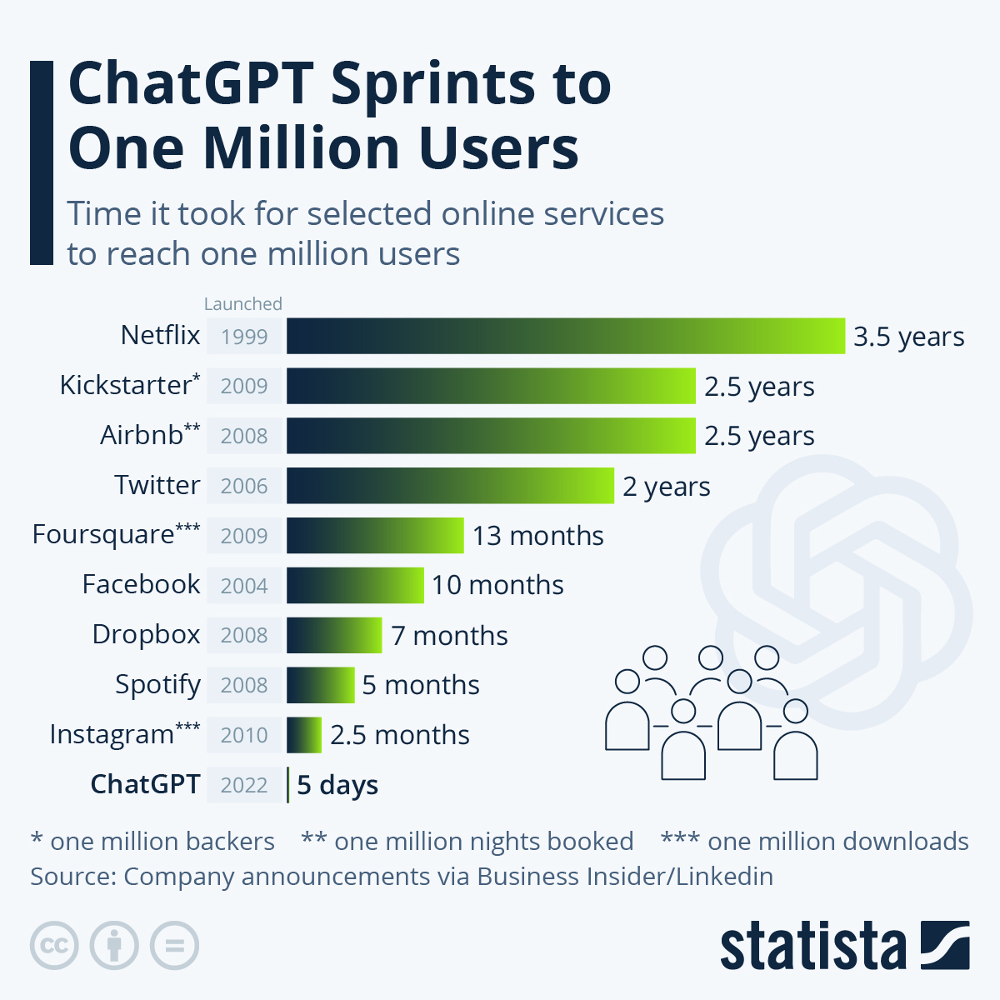

Tarik Jaber
ENG 1201
Professor Monroe
16 April 2023
Generative AI has recently taken the spotlight in technology with ChatGPT releasing on November 30, 2022. Other forms of generative AI like text-to-image tools like DALLE and Stability AI’s Stable Diffusion have also been released recently. These tools can generate text, write emails, generate images, and assist with coding. With these capabilities, however, comes negative use of this technology. In the article titled What are deepfakes and how to spot them? it is explained that deepfakes create fabricated depictions of events by utilizing a type of AI called deep learning, which is why they are referred to as deepfakes (Sample). Through applications like deep fakes, generative AI can be used to generate false information, and worsen public trust of politicians. Students can write essays and answer homework questions, which can undermine the educational process. As the text output of Large Language Models like ChatGPT by OpenAI and Bard by Google sounds authoritative and plausible, people may start using it as a source of information like Google. OpenAI is an artificial intelligence research organization that was created in 2015 with the intention of creating accessible and beneficial AI tools. Generative AI is a game-changer that will undoubtedly revolutionize multiple industries. Despite ethical concerns like deep fakes and plagiarism, the positives of this technology far outweigh the potential downsides. Proper regulations and guidelines can help ensure its responsible use and prevent malicious actors from misusing it. In doing so, generative AI can significantly enhance efficiency, productivity, and accuracy in various fields, leading to better outcomes and a more prosperous society overall.
One key area that has quickly become a stellar application of generative AI is Code Completion and Generation. A recently published paper on the productivity benefits of AI code completion highlights that code generation has advanced to a level where generating code snippets with accuracy is feasible for use in writing software applications. While existing code generation tools aim to enhance programmers' productivity, they lack direct ways to gauge it. The paper's case study involved surveying Copilot users about its productivity impacts and analyzing user data to determine their perception of productivity. The study found that developers' perception of productivity was driven more by the rate of accepting suggested completions, rather than metrics related to the quality of code completions over time. (Ziegler et al., 1). One of the tools mentioned in the paper is called Copilot created by the company GitHub. According to information provided on its website, GitHub is a comprehensive developer platform designed to create, expand, and securely deliver software (“GitHub About”). They released a tool named Copilot, which GitHub refers to as an assistant programmer that helps in speeding up the code-writing process with minimal effort. The tool is capable of providing suggestions for individual lines and entire functions by drawing context from code and comments in real-time. OpenAI Codex, a generative language model developed by OpenAI, powers GitHub Copilot. (“GitHub Features Copilot”). This tool can substantially increase developer productivity by generating entire snippets of code on the fly. Developers no longer have to always consult external sources like StackOverflow for questions and can quickly use packages without consulting their documentation. Developers can write comments describing what their code wants to do and Copilot will create suggestions for what it should write next. On March 22, 2023, GitHub announced Copilot X (“GitHub Copilot X”). The article by Dohmke notes that GitHub Copilot is progressing towards incorporating chat and voice interfaces, accommodating pull requests, responding to queries regarding documentation, and integrating GPT-4 to provide a customized programming experience (Dohmke). This enhances Copilot by adding chat interfaces that the user can use to ask questions about the code they are writing or ask for suggestions on how they can implement certain functionality. If there are errors running in the code, Copilot can provide suggestions for how to fix these errors as it has access to the code. This is a tremendous improvement over the regular Copilot which could only suggest code. Copilot X is now a more capable “pair programmer '' that can be used at all steps of the development process through code generation, debugging , pull request summary generation, and documentation question answerer. As Large Language Models and other forms of artificial intelligence continue to improve, the power of these tools will only grow larger. But these tools have their drawbacks as well. First, text generation tools like ChatGPT may not always be up to date. ChatGPT’s cutoff date is September 2021 (“ChatGPT is aware of today’s date”). This can be concerning for coding as out-of-date packages can have security vulnerabilities. Code generated could be wrong as programming languages are updated. This issue was pointed out by Tim Starks in his article. He brings up the possibility that ChatGPT could develop malware that possesses the ability to alter its appearance to evade detection (Starks). This is rather concerning as ChatGPT can generate entire programs based on user text. If the user is malicious, they can generate code that could be utilized for activities such as ransomware, data extortion, denial-of-service attacks, cyberterrorism, among others. (Starks). Clearly, there needs to be safe guards built into these applications so that it cannot be used for malicious purposes. This could enable cybercriminals to develop more complex attacks faster and more frequently. Social engineering techniques like tutorials and money making schemes could also be created at faster rates using these kinds of tools. On the flip side, however, the article also mentions that ChatGPT could help cyber pros “counter cyberthreats”. Another issue is that generative code tools like Copilot can create overconfident programmers that could lead to bugs. In his blog on Issue 180, Andrew Ng mentioned how a group of researchers at Stanford University discovered that developers who utilized OpenAI's Codex, a computer code generation model, were more prone to producing flawed software compared to those who wrote code from the beginning. (Ng). This is also another issue as this could lead to security vulnerabilities or bugs that could cost companies and governments. This can be mitigated by being more careful with the generated code to ensure it is valid and to improve the code testing process. Clearly, tools like Copilot help developers work at substantially faster rates. But this comes with a downside of potential security vulnerabilities and buggy code. In summary, generative text tools like Copilot and ChatGPT can radically improve developer productivity but this increased productivity has to come with a level of caution and these tools can generate bugs and security vulnerabilities.
Another key area of potential and concern for generative AI is education. In Navigating the Risks and Rewards of ChatGPT, Gilbard mentions many positives and negatives about this technology. She lays out three potential concerns. The first is how AI is automating many professions and as a result, career preparation in school may need to change. She mentions how ChatGPT can be used to generate and execute code and this will impact the future of computer science education and curriculums. The second is how AI upholds and promotes racist structures. The article talks about how algorithms, including those employed in AI applications, maintain racial biases and colonial structures throughout the internet. This is because the data ChatGPT was trained on is biased, leading to AI tools that are also biased. The third is that AI promotes misinformation. She quotes Renshe Yu, an assistant professor at Columbia University, next. She points out that the responses produced by generative AI tools do not provide any guarantee of their accuracy (Yu). As these tools learn from human communication, most of their output will have a confident tone similar to human communication, even if the information is false. This emphasizes the necessity for students to develop media literacy skills to navigate misinformation online, as stated by Gilbard. Furthermore, Gilbard discusses how ChatGPT represents another stage in the ongoing effort to enhance education. The reality is that these tools definitely have drawbacks, but there is also tremendous upside. ChatGPT can be used to help students explain difficult topics to them as though they are talking to an expert in the subject they are asking about. Misinformation can be tackled with increasing the safeguards on the text output and implementing ways of these models to be able to source where they received their information from. Increasing media literacy of students is critical as Gilbard mentioned and if these models can cite their sources, students will be able to decide based on the quality of the sources if the model output is valid. The authors of "So what if ChatGPT wrote it?" acknowledge that transformative AI tools, like ChatGPT, are capable of generating intricate text that is difficult to differentiate from that produced by humans. They can be used in various settings, according to the authors (Dwivedi et. al 1). They discuss how generative AI can enhance productivity, and how it can have significant gains in many different fields like information technology, hospitality and tourism, banking and business. The authors state that teaching, learning, and academic research will undergo significant transformative changes. But they point out that there are still major concerns like bias, out of date training data, and lack of transparency as major concerns. There is a split between the authors on whether there should be regulation on tools like ChatGPT but they mention how it is critical that there needs to be policies in place to prevent misuse and abuse of this technology. This concern was also echoed in the article by Morrow on Generative AI. She mentions how the internet is filled with misleading information, risky ideologies, and unlawful conduct, all of which serve as source materials for chatbots. (Morrow). She references Beena Ammanath, who is the lead of Trustworthy Tech Ethics at Deloitte. In the article, she noted that new language models pose a challenge because they mix facts and fiction, allowing for effective spread of misinformation. Despite sounding logical, the content they generate may be incorrect due to their lack of understanding of the context. Additionally, these models deliver their output with unwavering confidence, further adding to the difficulty of distinguishing truth from falsehood. This is concerning for education and many tools are quickly popping up with focuses on education. The article Introducing Q-Chat discusses the potential benefits of having a one-on-one tutoring system that can adapt to different learning styles and skill levels. The author imagines a learning environment where comprehensive information on every subject is easily accessible. To make this vision a reality, the author introduces Q-Chat, an AI tutor built with the ChatGPT API along with Quizlet’s large data library. The article mentions that Quizlet is the first education technology company to gain access to and build on the ChatGPT API, and they are excited to offer personalized AI tutoring to students worldwide. (Lex). The article then moves to discuss how one-on-one tutoring is the most effective way of learning. This is quite promising and at the same time concerning. This can be a tremendous tool used for education as students can have tremendous resources available to them at their fingertips. But as discussed before, misinformation is still of concern. Students can receive incorrect definitions for terms or have incorrect answers to quiz questions provided by the chatbot. This comes down to students and other individuals taking these chatbots as a source of information when it could be false. 90 of The Batch mentions how 16% of adults who encountered AI generated articles said it was a major technological advance, which demonstrates how there is quite a bit of skepticism regarding the use of generative AI tools to receive information from. If these issues can be mitigated, then these tools will definitively transform education as one-on-one tutoring is very effective in learning. In summary, generative AI has the potential to completely revolutionize education, by assisting students in their learning with tutoring but regulations could need to be in place to prevent this technology from being misused.
Finally, there are applications in healthcare and assisting teachers in their work. In their book AI 2041, the authors explore ways that artificial intelligence will change the world by the year 2041. He mentioned healthcare and how AI can be used to help prevent outbreaks of viruses and assist doctors in disease diagnosis (Lee and Qiufan 67). The book also mentioned how transformers can be used to help in many different areas, most notably in education. They could help with grading, generating assignments, and helping to answer questions. The human teachers would be able to focus on areas only they can assist in like emotional intelligence. Clearly, there are other transformative applications of generative AI.
Generative AI tools like ChatGPT have been recently released. But the impact and concern they have generated has been astronomical. In ChatGPT Sprints to One Million Users, the article mentions how ChatGPT took 5 days to reach 1 million years (Buchholz). They also mention how Instagram took 2.5 months, Spotify 5 months, and Facebook 10 months as seen in Figure 1 below.
Fig. 1. Katharina Buchholz, ChatGPT Sprints to One Million Users
This rapid explosion of the use of the tool is quite staggering. These tools can have tremendous impact in many industries including code development and education. But at the same time there is concern regarding abuse. Generative AI is a game-changer that will undoubtedly revolutionize multiple industries, from healthcare to education. Despite ethical concerns like deep fakes and plagiarism, the positives of this technology far outweigh the potential downsides. Proper regulations and guidelines can help ensure its responsible use and prevent malicious actors from misusing it. In doing so, generative AI can significantly enhance efficiency, productivity, and accuracy in various fields, leading to better outcomes and a more prosperous society overall.
Bayer, Lex. “Introducing Q-Chat, the World’s First AI Tutor Built with ... - Quizlet.” Quizlet, Quizlet,
quizlet.com/blog/meet-q-chat.
Buchholz, Katharina, and Felix Richter. “Infographic: Chatgpt Sprints to One Million Users.” Statista
Infographics, 24
Jan. 2023,
www.statista.com/chart/29174/time-to-one-million-users/#:~:text=The%20popular%20social%20media%20service,offer%20an%20immediate%20practical%20use.
“Build Software Better, Together.” GitHub, GitHub, github.com/about.
Dwivedi, Yogesh K., et al. “‘So What If ChatGPT Wrote It?’ Multidisciplinary Perspectives on Opportunities,
Challenges
and Implications of Generative Conversational AI for Research, Practice and Policy.” International Journal of
Information Management, vol. 71, Aug. 2023. EBSCOhost, https://doi.org/10.1016/j.ijinfomgt.2023.102642.
Dohmke, Thomas. “GitHub COPILOT X: The AI-Powered Developer Experience.” The GitHub Blog, GitHub, 22 Mar. 2023,
github.blog/2023-03-22-github-copilot-x-the-ai-powered-developer-experience/.
Gilbard, Morgan. “Navigating the Risks and Rewards of Chatgpt.” Teachers College - Columbia University, Teachers
College, Columbia University, 1 Feb. 2023,
www.tc.columbia.edu/articles/2023/january/navigating-the-risks-and-rewards-of-chatgpt/#:~:text=ChatGPT%2C%20a%20newly%20popular%20artificial,to%20ban%20the%20software%20altogether.
“GitHub Copilot X.” YouTube, YouTube, 22 Mar. 2023, www.youtube.com/watch?v=4RfD5JiXt3A.
“GitHub Copilot · Your AI Pair Programmer.” GitHub, GitHub, github.com/features/copilot.
GitHub, Albert Ziegler, et al. “Productivity Assessment of Neural Code Completion: Proceedings of the 6th ACM
SIGPLAN
International Symposium on Machine Programming.” ACM Conferences, GitHub, 1 June 2022,
dl.acm.org/doi/10.1145/3520312.3534864.
Lee, K.-F., & Chen, Q. (2021). AI 2041 : ten visions for our future (First edition.). Currency
Ng, Andrew. “Issue 180.” Generated Code Makes Overconfident Programmers, China's Autonomous Drone Carrier and
More,
DeepMind, 13 Feb. 2023, www.deeplearning.ai/the-batch/issue-180/.
Ng, Andrew. “Issue 190.” Public Attitudes Toward AI, Wanted: Prompt Engineers, and More, Public Attitudes Toward
AI,
Wanted: Prompt Engineers, and More, 31 Mar. 2023, https://www.deeplearning.ai/the-batch/issue-190/.
Peter FranekPeter Franek 41211 gold badge44 silver badges1010 bronze badges, et al. “Chatgpt Is Aware of Today's
Date.”
Artificial Intelligence Stack Exchange, 5 Dec. 1969,
ai.stackexchange.com/questions/39686/chatgpt-is-aware-of-todays-date#:~:text=As%20an%20AI%20language%20model,it%20assumes%20the%20current%20date.
“Welcome to the 'generative AI' era. Resistance is futile." CNN Wire, 9 Feb. 2023, p. NA. Gale In Context:
Opposing
Viewpoints, link.gale.com/apps/doc/A736294985/OVIC?u=dayt30401&sid=bookmarkOVIC&xid=9590323e. Accessed 2 Apr.
2023.
“What Are Deepfakes – and How Can You Spot Them?” The Guardian, Guardian News and Media, 13 Jan. 2020,
www.theguardian.com/technology/2020/jan/13/what-are-deepfakes-and-how-can-you-spot-them.
“Yes, ChatGPT can write malicious code -- but not well." Washingtonpost.com, 26 Jan. 2023, p. NA. Gale In Context:
Opposing Viewpoints, link.gale.com/apps/doc/A734782617/OVIC?u=dayt30401&sid=bookmarkOVIC&xid=5d6df644. Accessed 2
Apr.
2023